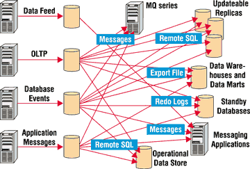
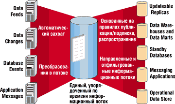
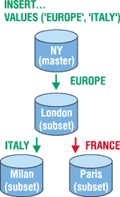

Mарк Ривкин,
руководитель группы технических консультантов по серверным технологиям московского
представительства Oracle
Mark.Rivkin@oracle.com
Обмен информацией
При построении современных информационных систем пользователи редко ограничиваются одним компьютером с одной базой данных (БД). Гораздо чаще приходится использовать многосерверные архитектуры. Причины этого кроются в задачах, которые приходится решать, и в архитектурах создаваемых прикладных систем. Например, типичная архитектура информационной системы крупного предприятия включает такие элементы, как центральная БД и БД филиалов или регионов, причем эти узлы должны обмениваться информацией. Другой пример - интеграция старых информационных систем, успешно работающих на предприятии, и вновь создаваемых систем. Типичная многосерверная архитектура возникает и тогда, когда в организации создается хранилище данных, собирающее информацию из нескольких оперативных систем, или когда для повышения надежности прикладной системы организуются резервные информационные центры.
Но информацией обмениваются не только различные СУБД (возможно, продукты различных фирм); информацией должны обмениваться и приложения и пользователи. Причем они обмениваются информацией не только об изменении данных в одной из систем, но и о выполненных транзакциях, произошедших событиях, а также сообщениями и т. д.
Если в старых системах приложение, которому требовалась информация из другого приложения, было устроено так, чтобы просто время от времени явно запрашивать это второе приложение об изменениях, то в современных информационных системах процесс обмена информацией должен происходить автоматически, не требуя программирования. Надо, чтобы передавалась только та информация, которая нужна, в то время и в то место, когда и где она действительно нужна, не перегружая при этом сеть и исходную БД.
Многие компании для решения задачи обмена информацией приобретают специальные программные пакеты, поддерживающие эти функции. В этом случае им потребуются сервер репликации, пакет для работы с очередями сообщений, средства загрузки данных в хранилища и витрины данных, ПО для нотификации (извещения о событиях) и управления событиями и т. д. Иногда достаточно приобрести только часть этих средств. Не будем говорить о стоимости этого дополнительного ПО и недостатках многих пакетов. Главная проблема здесь - интеграция. Сложность интеграции таких разнородных систем с различной архитектурой, языками, средствами доступа и т. д. настолько велика, что большинство интеграционных проектов оканчивается неудачей.
Пользователям СУБД Oracle несколько проще, поскольку средства для репликации, обмена сообщениями, организации резервной БД, захвата изменений и загрузки хранилищ и витрин данных входят в состав сервера Oracle9i без дополнительной платы (см. таблицу). Однако и у такого подхода много недостатков.
Типичные решения для обмена информацией
| Дополнительные средства обмена информацией | Oracle |
| Replication Tools (сервер репликации) | Advanced Replication |
| Messaging Software (система работы с очередями сообщений) | Advanced Queueing |
| Warehouse Loaders (загрузчики данных) | CMC + Loader + WB |
| HA, Performance SW (средства для обеспечения надежности работы и производительности серверов) | Standby |
| Middleware (ПО промежуточного слоя) | Integration in iAS |
| Event Management apps (средство управления событиями) | То же |
| Notification apps (система извещения о событиях) | -- |
Допустим, у нас есть совокупность приложений, включающая хранилища и витрины данных, оперативные системы, резервные узлы, приложения, использующие обмен сообщениями (как с приложениями Oracle, так и с другими пакетами, например, с MQ Series) и т. д., и между ними надо организовать обмен информацией. Схематически эта система представлена на рис. 1, откуда видно, что придется поддерживать множество связей и передавать огромное количество информации.
|  | Рис. 1. Традиционная интеграция данных.
|
В такую архитектуру трудно встроить приложения, построенные на основе чужих (не Oracle) СУБД, в ней трудно реализовать систему извещения пользователей о событиях и управления событиями (это требует написания дополнительного программного кода). А если во время эксплуатации системы мы решим, например, не реплицировать в резервную БД изменения отдельных объектов, а поддерживать полноценную копию всей исходной БД, то это потребует большого объема работы со стороны администратора БД.
Поэтому компания Oracle решила создать универсальный гибкий механизм обмена информацией, свободный от этих недостатков и позволяющий одновременно реализовать репликацию, обмен сообщениями, загрузку хранилищ данных, работу с событиями, поддержку резервной БД (логический Standby). Этот механизм называется Oracle Streams и состоит из трех основных элементов:
- захват изменений (Capture);
- складирование, хранение и распространение изменений (Staging);
- применение изменений (Consumption или Apply).
Теперь в исходной системе вся необходимая для различных механизмов обмена информация автоматически захватывается, упорядочивается, преобразуется в универсальный формат и помещается в область хранения. Далее она автоматически перемещается между областями хранения и в тех целевых узлах, где она нужна, используется Apply-процессами, которые выполняют репликацию, или загружают хранилище данных, или обновляют резервную БД. Приложениям-потребителям достаточно просто подписаться на необходимую им информацию, и они будут ее автоматически получать, а Apply-процессы будут ее автоматически применять. Теперь схема интеграции существенно упростилась (рис. 2), количество связей в ней уменьшилось. Заказчик теперь должен покупать, изучать, конфигурировать и поддерживать только один продукт, добавление новых публикаторов (поставляющих информацию об изменениях в поток) и новых подписчиков (потребляющих информацию из потока) выполняется легко, заменить один механизм обмена информацией на другой достаточно просто. И главное, падает нагрузка на сеть и эксплуатационную систему. Oracle Streams захватывает информацию об изменениях из журнальных файлов, не нагружая эксплуатационную систему, причем захватывает и передает ее только один раз, не дублируя информацию. Кстати, Oracle Streams включается в состав сервера Oracle без дополнительной платы.
|  | Рис. 2. Интеграция данных в Oracle Streams.
|
Архитектура Oracle Streams
Механизм Oracle Streams реализован на основе системы обмена очередями сообщений Oracle Advanced Queuing. При конфигурировании Oracle Streams в каждой БД, участвующей в обмене информацией, запускаются дополнительные процессы и создаются дополнительные структуры данных, необходимые для поддержки потоков информации.
Единица информации, помещаемая в поток, называется событием (event). Этот универсальный элемент потока может либо быть стандартного типа (он называется LCR - Logical Change Record) и содержать информацию о DDL- или DML-изменениях в исходной БД, либо произвольного типа - тогда это просто пользовательское сообщение, за помещение которого в поток и извлечение из потока отвечают пользовательские программы. Иначе говоря, в одном потоке можно передавать как информацию об изменениях данных и структур, так и произвольные сообщения. Причем в один и тот же поток могут помещать свои элементы различные БД и приложения. А в целевых узлах из этого потока будут извлекаться только те элементы, которые нужны данному узлу.
Поток данных может течь как внутри одной БД (таким образом удобно поддерживать копии объектов, материализованные представления (snapshots), реализовать систему извещения о событиях), так и между различными БД. В этом случае область хранения (Staging Area) целевой БД просто "подписывается" на информацию из области хранения исходной БД. После этого необходимая информация автоматически течет из исходной БД в целевую.
Захват изменений
Захват информации об изменениях и сообщений в исходном узле может выполняться явно или неявно. В случае неявного захвата сконфигурированный процесс захвата (Capture) автоматически считывает из оперативных или архивных журналов БД (redologs) информацию об изменениях в БД, используя механизм утилиты LogMiner. Далее считанная информация фильтруется в соответствии с заданными условиями захвата (например, захватываются только изменения в конкретных таблицах или схемах, только DDL- или только DML-изменения и т. д.). Отфильтрованная информация преобразуется в формат LCR и помещается в область хранения.
В случае явного захвата информации приходится писать пользовательские приложения, которые захватывают информацию из Oracle или других систем и сами, используя API, помещают эту информацию в область хранения. Для создания этих приложений можно использовать Java (JMS), C, PL/SQL, SOAP (XML/HTTP), XML/SMTP. Если информация явно помещена в поток в виде LCR, то она может далее автоматически применяться к целевой БД Apply-процессами. Если же она помещена в поток в виде сообщений, то необходимо написать процедуру извлечения этих сообщений из потока (очереди) и установить эту процедуру на целевом узле (узлах).
Складирование, хранение и распространение изменений
Вся захваченная информация хранится в областях хранения. Они реализуются в виде очередей сообщений, поэтому для работы с ними можно использовать стандартный API Advanced Queuing. Однако, поскольку в этой очереди хранятся не только сообщения стандартных типов, но и информация об изменениях различных типов данных в БД, Oracle ввела поддержку нового самоописывающегося типа данных Sys.AnyData. В этом типе данных могут храниться самые разные типы информации, и он позволяет совмещать в одной очереди (потоке) различные типы данных. При помощи методов этого объектного типа можно извлекать информацию о типе хранящегося экземпляра объекта, сам экземпляр объекта, его элементы, модифицировать экземпляр объекта, преобразовывать другие типы в Sys.AnyData и т. д.
Все элементы потока, помещенные в область хранения, хранятся в ней до тех пор, пока все подписчики, подписавшиеся на эти элементы, не используют их. Напомним, что подписчиками могут быть не только Apply-процессы, но и другие области хранения или пользовательские приложения. Использованные элементы потока автоматически уничтожаются, однако можно отменить уничтожение и оставить их в области хранения, например, для проведения аудита.
При помещении элементов потока в область хранения, при их извлечении из нее и при перемещении в другую область хранения можно выполнять преобразование элементов. Это делается автоматически; необходимо лишь указать при конфигурировании, какие процедуры будут выполнять преобразование и для каких элементов потока эти процедуры надо вызывать. Каждая процедура преобразования получает на входе элемент потока (LCR или сообщение), модифицирует его и возвращает модифицированный элемент. Например, такая процедура может изменить формат или тип данных реплицируемой колонки, имя колонки или таблицы и т. д. Это позволяет использовать Oracle Streams для репликации данных между объектами разной структуры.
Применение изменений
Когда поток достигает области хранения целевой БД, на него "набрасываются" Apply-процессы этой целевой БД (если они там имеются), подписавшиеся на данный поток. Они извлекают предназначенные для этого узла элементы потока и применяют их к своей БД. Apply-процессов в БД может быть несколько. Для извлечения пользовательских сообщений из потока создаются пользовательские Apply-процессы, которые явно извлекают сообщения из потока (очереди). Эти пользовательские приложения можно писать на Java (JMS), C, PL/SQL, SOAP (XML/HTTP), XML/SMTP.
Более интересны, однако, автоматически срабатывающие Apply-процессы, используемые по умолчанию (default). Они читают LCR из потока, преобразуют их в команды DML или DDL и автоматически применяют эти SQL-команды к БД. Причем команды SQL могут применяться как к таблицам и объектам локальной БД, так и через Database Link и шлюз (Gateway) к таблицам чужих (не Oracle) СУБД.
Поскольку целевая БД, кроме участия в обмене информацией, может быть открыта для изменений другими приложениями, может сложиться ситуация, когда одни и те же данные одновременно изменены и в исходной и в целевой БД. Иначе говоря, мы сталкиваемся с конфликтами обновления и должны уметь их разрешать. Oracle Streams способна автоматически определять и разрешать такие конфликты. Имеется ряд стандартных механизмов их разрешения (берется минимальное или максимальное значение, последнее по времени изменение и т. д.), но можно написать и свои собственные процедуры разрешения конфликтов.
Чтобы ускорить применение изменений к БД, Apply-процесс фактически выступает в роли координатора этой работы. Он порождает параллельно работающие подпроцессы, которые читают LCR из потока, собирают их в транзакции, а потом параллельно применяют к БД. Если в потоке сосуществуют LCR из разных узлов, захваченные разными Capture-процессами, то для их применения в данном узле надо создать несколько Apply-процессов (для каждого Capture - свой Apply).
Кроме того, Apply-процесс, используемый по умолчанию, может не только формировать команды SQL на основе LCR, но и выполнять более сложную обработку. В этом случае для него указывается имя пользовательской Apply-функции, которая получает LCR, обрабатывает их и применяет к БД. Эти функции можно писать на PL/SQL, Java, C, C++. Такие функции могут также выполнять дополнительные преобразования данных, исключать из изменения некоторые колонки, нормализовать/денормализовать данные, записывать дополнительную информацию в другие колонки и таблицы (не указанные в LCR) и т. д.
Правила
Как уже упоминалось ранее, не все изменения выбираются из журналов БД, не все изменения притекают в конкретные узлы и не все они применяются к конкретной БД. Фильтрация изменений реализуется за счет того, что подписка на изменения основана на правилах. Правила регламентируют, какую информацию надо захватывать, транспортировать, применять. Причем эти правила используют содержимое элемента потока, т. е. можно указать, что в определенный узел попадают только изменения для определенных объектов. Кроме того, если изменить, например, значение поля "Страна" в записи с "UK" на "Russia", это приведет к тому, что такие изменения будут передаваться не на английские, а на российские узлы, и будут применяться там.
Машина правил существует в сервере Oracle независимо от Oracle Streams. Пользовательские приложения, равно как и Oracle Streams, могут использовать ее, передавая ей оцениваемую строку и имя набора правил и получая ответ (истина/ложь). Правила описываются пользователем как обычное условие, напоминающее предикат SQL-выражения WHERE, и являются объектами БД. Из отдельных правил формируются наборы правил - RULE SETS, которые машина правил и применяет для оценки. Кстати, с помощью правил можно не только отфильтровать изменения, относящиеся к отдельным объектам БД или схемам, DDL- или DML-операции, но также наложить условие на изменения таблицы, применяемые в конкретном узле, порождая таким образом разные подмножества одной таблицы в разных БД.
Конфигурирование маршрута потока не зависит от конфигурирования Apply-процессов конкретных узлов. Благодаря этому и системе правил можно управлять движением потока. Например, поток может течь через некоторые узлы, не меняя их БД. Это позволяет уменьшить нагрузку на сеть, поскольку все изменения не текут от исходной БД во все целевые БД, создавая много "широких" потоков. Вместо этого получается широкий поток, который затем расщепляется на несколько более мелких. Например, если в Нью-Йорке в таблицу записываются данные, часть из которых должна быть реплицирована в БД в Англии, часть - в Италии, а часть - во Франции, то мы можем направить весь поток из Америки через океан в Европу (в Лондон). Там изменения для Англии будут извлечены и обработаны, а поток расщепится, и часть оставшихся изменений пойдет в Италию, а часть - во Францию (рис. 3).
|  | Рис. 3. Расщепление потока.
|
Поскольку Apply-процесс БД Oracle может через Database Link и шлюз вносить изменения в чужие БД или передавать сообщения в чужие системы управления сообщениями, а приложения, работающие с чужими СУБД и системами сообщений, могут помещать LCR и сообщения в поток Oracle, механизм Oracle Streams удобно использовать для обмена информацией и интеграции разнородных приложений, построенных как на платформе Oracle, так и на платформах других компаний. Шлюз Message Gateway позволяет работать с сообщениями потока Oracle Streams из пакета MQ Series.
Для установки, конфигурирования и поддержки Oracle Streams в различных режимах можно использовать дружелюбный графический интерфейс штатного инструмента администратора Oracle - Oracle Enterprise Manager.
Преимущества Oracle Streams
Итак, Oracle Streams обеспечивает репликацию, обмен сообщениями, поддержку логической резервной БД, загрузку хранилищ и витрин данных, извещение о событиях. Однако он не только реализует эти отдельно существовавшие механизмы обмена информацией, но и обеспечивает им ряд дополнительных преимуществ.
Репликация
В случае репликации используется следующая архитектура:
Неявный захват --> хранение --> перемещение --> неявный Apply-процесс
по умолчанию
Это самый простой случай использования Oracle Streams. Он легко конфигурируется и поддерживает автоматическую асинхронную репликацию многих копий объекта. Причем данные могут реплицироваться как между одинаковыми объектами (весь объект или часть объекта), так и между объектами с разной структурой (через преобразования или Apply-функцию).
Oracle Streams автоматически захватывает, передает и применяет DDL- и DML-изменения, определяет и разрешает конфликты, позволяет выполнять репликацию с объектами в чужих СУБД, снижает нагрузку на сеть и эксплуатационную систему по сравнению с обычной репликацией за счет извлечения информации из журналов.
Загрузка хранилищ и витрин данных
В случае загрузки хранилищ и витрин данных используется следующая архитектура:
Неявный захват --> хранение --> перемещение --> неявный Apply-процесс
с помощью пользовательской функции
В этом случае обновления захватываются автоматически из оперативной БД. Кроме того, в поток можно помещать информацию об изменениях в чужих СУБД или пользовательские сообщения о функционировании оперативной БД (можно, например, создать хранилище сообщений). Операции очистки и преобразования данных, типичные для хранилищ данных, могут быть выполнены как процедуры преобразования при помещении/извлечении из/в область хранения.
Обычно данные из оперативных систем перегружаются в хранилища в пакетном режиме. Между загрузками проходит много времени, и хранилище или Operating Data Store (ODS) отстают от БД оперативных систем. В случае Oracle Streams можно организовать непрерывную подпитку хранилища или ODS "тонкой струйкой" изменений, при этом отставание ODS или хранилища от оперативной системы будет минимальным, и эту целевую БД можно будет использовать для получения отчетов или анализа данных почти в реальном времени.
Поскольку изменения захватываются из журналов, нет необходимости давать администраторам хранилища или ODS доступ к оперативным системам, что очень порадует администраторов оперативных систем.
Извещение о событиях
Очень часто требуется в автоматическом режиме извещать пользователей приложения о каких-либо событиях или изменениях, происходящих в БД или приложении. Например, система Orbitz посылает на пейджер пользователей информацию о задержках авиарейсов. Система CNET Shopper отслеживает изменение цен на товары и при их снижении извещает об этом пользователей. CRM-приложения могут оповещать продавцов о покупках, совершаемых наиболее важными клиентами.
Oracle Streams позволяет легко создать приложение такого типа в БД. Для этого используется следующая архитектура:
Неявный захват --> хранение --> явное извлечение из потока
Пользовательская программа извлекает из потока данные об изменениях, формирует на их основе сообщения для пользователей и отправляет эти сообщения по электронной почте, на пейджер, телефон и т. д.
Очереди сообщений
Oracle Streams построен на основе системы передачи сообщений Oracle Advanced Queuing и поддерживает все функции развитой системы обмена сообщениями, такие, как публикация и подписка на основе правил, очереди со многими потребителями (multi-consumer), что уменьшает загрузку сети, подписка на основе контента сообщения. Возможность интегрировать в одной очереди данные для репликации и сообщения позволяет реализовать единую модель работы для передачи транзакций и сообщений и единую модель безопасности, а также повысить надежность системы. Oracle Streams поддерживает автоматическое преобразование информации о DDL- и DML-операциях в формат сообщений.
В случае работы с сообщениями используется архитектура:
Явный захват --> хранение --> перемещение и явное извлечение
Система очередей сообщений на основе Oracle Streams позволяет легко интегрировать разнородные системы, разрабатывать приложения, обмениваться сообщениями с системами Message Queuing различных фирм.
Резервная БД (Logical Standby)
Для защиты прикладной системы от катастрофических сбоев, приводящих к выходу из строя не отдельного компьютера, а всего вычислительного центра, где находится основная эксплуатационная БД, служат резервные БД, расположенные вдалеке от здания основной БД. Такая резервная БД должна принимать и применять все изменения из основной БД, а в случае катастрофического сбоя быстро и без потерь заменить основную БД. Практически обновление резервной БД - это частный случай репликации, поскольку реплицируются все изменения в БД и изменения передаются в одну сторону - от эксплуатационной БД к резервной.
В случае использования Oracle Streams для поддержки резервной БД используется архитектура, несколько отличная от предыдущих. Перенос журналов Oracle (или информации об изменениях) из узла в узел осуществляется вне Oracle Streams с помощью механизма Oracle Data Guard. А вот на узле, где расположена резервная БД, архитектура Oracle Streams имеет следующий вид:
Неявный захват --> неявный Apply-процесс по умолчанию
Oracle Streams позволяет реализовать на резервном узле так называемый режим логического Standby; это означает, что резервная БД во время применения изменений открыта на чтение. Изменения проводятся при помощи обычных SQL-операций. Поэтому резервная БД может одновременно и догонять основную БД, и использоваться для построения отчетов, выполнения аналитических задач и т. д., разгружая эксплуатационную БД. Для повышения эффективности выполнения этих задач в резервной БД можно создать дополнительные индексы, таблицы, материализованные представления и т. д., и в результате ее структура может отличаться от структуры эксплуатационной БД. Кроме того, эксплуатационная и резервная БД могут работать на разных платформах и даже немного различаться по версиям сервера БД. Для конфигурирования и сопровождения такой логической резервной БД используется графический интерфейс компонента Oracle Data Guard, входящего в состав Oracle Enterprise Manager.